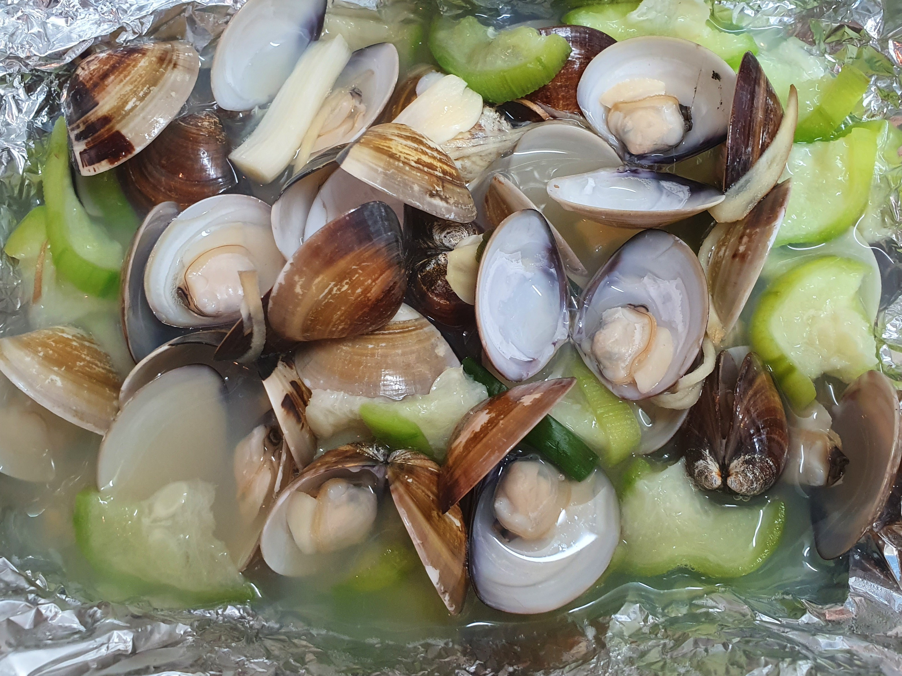
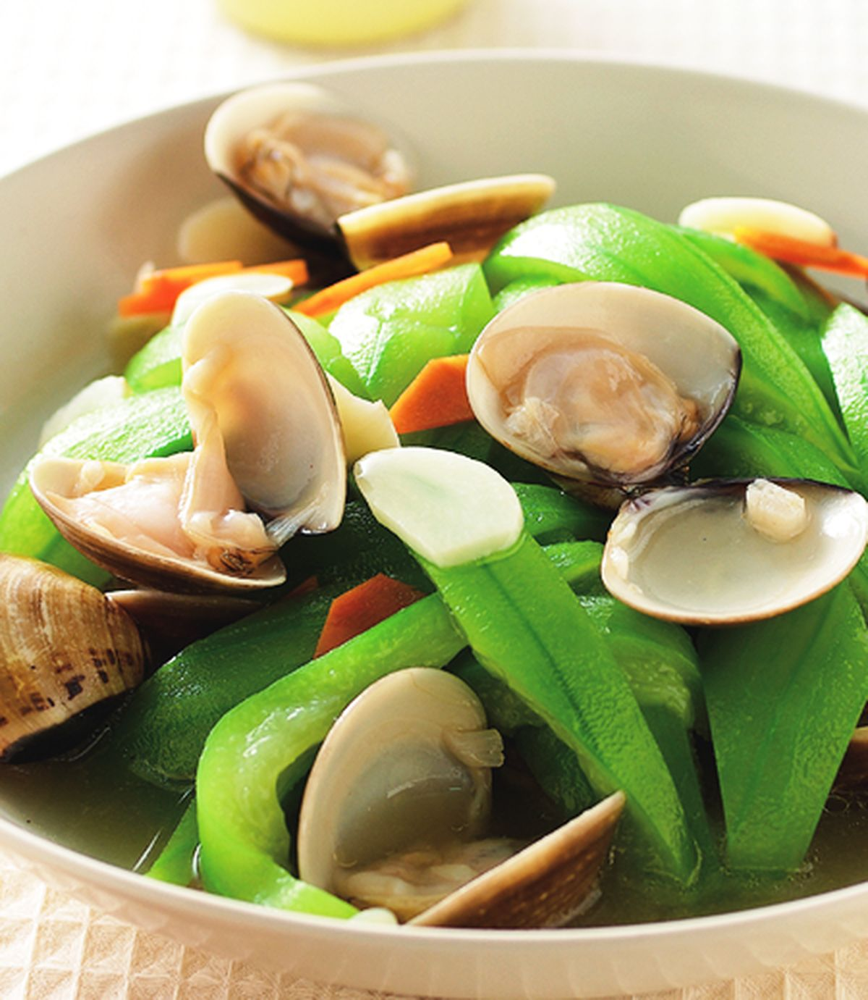
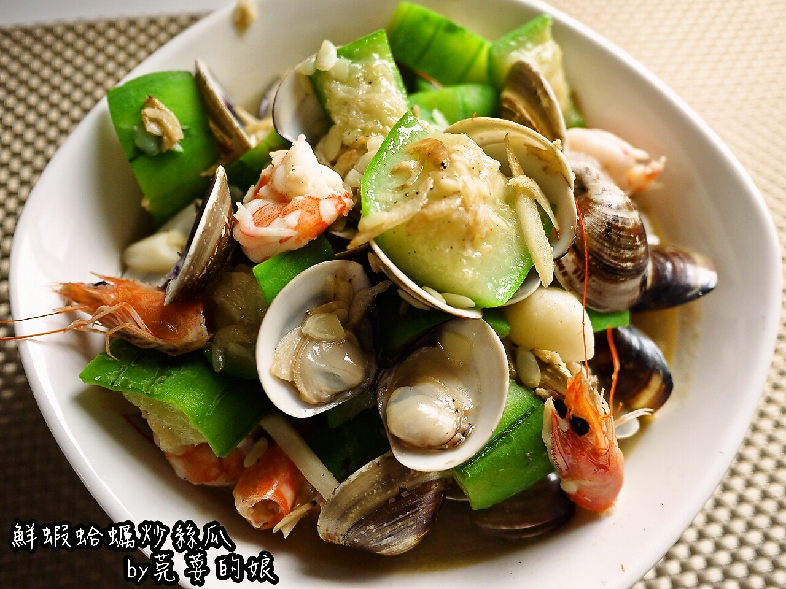

蛤蜊用鹽巴水浸泡2～3小時吐沙，接著洗淨。薑切成絲狀，枸杞泡水備用。
起油鍋，加入薑絲爆香，放入絲瓜、蛤蜊、枸杞、米酒後加蓋以中火燜煮，此時不要翻動。
以中火煮約3分鐘，開蓋翻動一下再續煮1分鐘，加入白胡椒粉、鹽即完成。
  
檸檬胡椒蝦介紹 韓式涼拌山茼蒿介紹 花椰菜濃湯介紹 香菇麻油雞飯介紹 心得
『短音樂』紓壓鋼琴曲 輕音樂【Acceptance by Fintan Oag】
Your browser does not support the audio element. Your browser does not support the video tag.